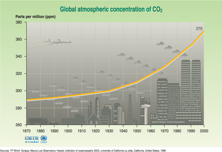

L'emissione di Co2

La concentrazione di CO2 nell'aria è aumentata dalla concentrazione di circa 280 ppmv in epoca pre-industriale sino alle attuali 367 ppmv (ppmv= parti per milione in volume). Le misurazioni della concentrazione di CO2 prima del 1958 sono state effettuate mediante carotaggi nel ghiaccio Antartico e, a partire dal 1958 vengono effettuati con gli strumenti del sito di Mauna Loa. La curva cresce lentamente nei primi 100 anni. E' evidente come la CO2 sia cresciuta rapidamente con l'avvento dell'industrializzazione. Questo aumento ha un andamento parallelo alla crescita delle emissioni di CO2 da carburanti fossili1.
La Nube Asiatica è un esempio dell'impressionante estensione che l'inquinamento atmosferico ha raggiunto ai giorni nostri2.
Le emissioni di CO2 e l'innalzamento delle temperature
La concentrazione di CO2 nell'atmosfera non aumenta solo a causa delle emissioni di origine umana:
La massiccia deforestazione e gli incendi degli ultimi decenni hanno contribuito in maniera significativa all'aumento dei livelli di CO2, sia attraverso il fumo degli incendi, sia perchè viene meno l'assorbimento di CO2 da parte degli alberi3.
Le attività umane hanno contribuito non poco all'enorme incremento dei livelli di CO2 nell'ultimo secolo.
Un meccanismo a catena
La concentrazione di CO2 nell'atmosfera è in realtà il risultato di un equilibrio ben più complesso che comprende anche l'emissione e l'assorbimento di CO2 da parte degli oceani, del suolo e delle foreste.
La capacità degli alberi di assorbire CO2 è ben nota. Meno noto è che anche gli oceani ed il suolo possono contenere grandi quantità di CO2.
Le quantità di CO2 assorbita e rilasciata attrarverso questi meccanismi naturali dipende fortemente dalla temperatura. Se la temperatura dovesse aumentare, a causa del riscaldamento globale, la CO2 emessa finirebbe per superare di gran lunga quella assorbita.
- Gli oceani in particolare ed il suolo cominceranno presto a rilasciare anche la CO2 assorbita in epoche passate, se la temperatura aumenta come previsto.
- I ghiacci di origine geologica (il cosiddetto permafrost) presenti in Alaska, Siberia e ai Poli contengono enormi quantità di metano2 , un gas serra ben più potente della CO2 : sciogliendosi il permafrost, migliaia di tonnellate di metano finirebbero coll'essere liberate, contribuendo cosi al riscaldamento globale in un processo perverso che si autoalimenta.
- I ghiacci inoltre riflettono la luce solare, impedendone l'assorbimento. La riduzione delle superfici ghiacciate può contribuire anche in questo modo all'aumento delle temperature.
- L'assorbimento di CO2 da parte degli alberi,e quindi delle foreste, potrebbe diminuire: vi sono indicazioni che il metabolismo vegetale (in particolare l'assorbimento di CO2 ) possa cambiare in funzione della temperatura.